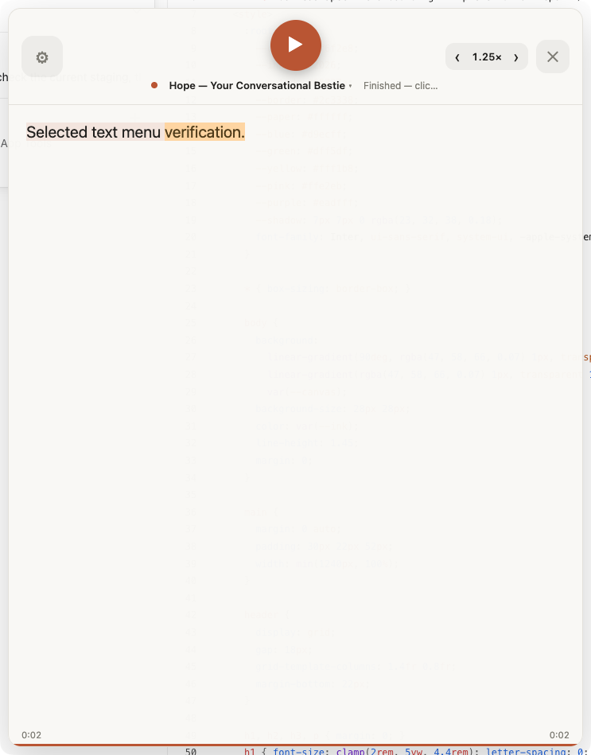
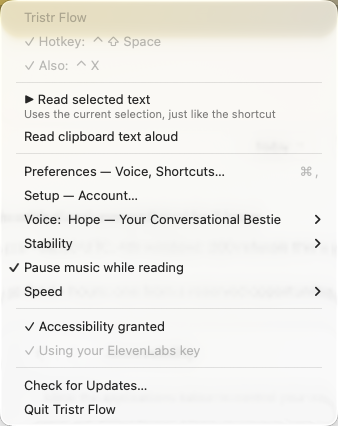
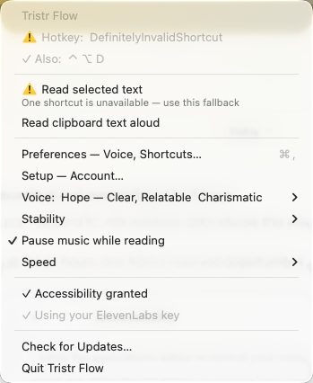

Shortcut recovery is installed
The tray fallback, health warnings, targeted selection capture, and privacy-safe PostHog integration are working. A physical shortcut press and the target project's Live Events view remain the two user-side confirmations.
Fast Answer
Root cause
The app registered both global accelerators only once. A lost native registration left the tray/TTS healthy but provided no retry, durable warning, or fallback selection action.
What changed
Registrations self-repair, sleep/unlock and tray opens force-refresh them, duplicate instances are blocked, and Read selected text targets the app selected before the menu opened.
Analytics
PostHog tracks operational outcomes using a random install ID. An explicit property allowlist excludes selected text, clipboard data, HTML, emails, and credentials.
Pass Criteria
PASS · Shortcut health
- Both accelerators register in the packaged app.
- Periodic repair and forced refresh are tested.
- One app instance owns the lifecycle.
PASS · Menu fallback
- Healthy and warning states rendered.
- Read selected text spoke the exact inactive TextEdit selection.
- Clipboard action remains separate.
PARTIAL · PostHog proof
- SDK initialization and flush succeeded.
- Privacy allowlist tests pass.
- Target Live Events UI was unavailable to the connected PostHog admin context.
End-To-End Evidence
E2E-02 · Selected-text menu — PASS
The installed app captured and read “Selected text menu verification.” from an inactive TextEdit document.
{kind=link}

E2E-03 · Healthy menu — PASS
Both configured shortcuts show checks; the fallback remains prominent immediately below them.
{kind=link}

E2E-03 · Warning menu — PASS
A controlled invalid primary accelerator highlights both the failed row and fallback action.
{kind=link}

E2E-01 / E2E-04 — BLOCKED
macOS automation-generated key events did not reach Electron's global shortcut callback; a physical press is required. The supplied token's project is not visible in the connected PostHog organization, so Live Events needs user confirmation.
Verification
Automated
- 14 Node tests passed.
- ESLint passed.
- Husky pre-commit ran lint + tests.
- Production dependency audit: 0 vulnerabilities.
- JXA capture script compiled.
Build + install
electron-builder --dirpassed.- Packaged PostHog SDK and source hashes verified.
- Installed at
/Applications/Tristr Flow.app. - Previous app preserved as a timestamped backup.
Open The Cards
Implementation details
src/shortcut-manager.jsowns registration status, targeted repair, and forced refresh.src/selection.jscan target the selection-owning process captured before the tray opens; the fallback reactivates that app before synthetic copy.src/main.jsshows live health in the tray, routes both triggers through one read workflow, refreshes after resume/unlock, and prevents duplicate owners.src/analytics.jswrapsposthog-node, batches events, disables person profiles/geolocation, and enforces an explicit property allowlist.
Git and delivery
- Base:
origin/mainat3ef0db9; latest remote changes fetched before worktree creation. - The installed Fish/overlay feature commit was replayed before implementation.
- Reviewed implementation commit:
9d2aaab. - No pull request was requested or created.
- Worktree:
/Users/zvonimirsabljic/Development/Trister Flow Worktrees/codex/desktop-shortcut-posthog.
Known caveat
The build host has no Developer ID certificate. Electron Builder therefore skipped signing. The new in-app warning/recovery path handles stale permissions, but a stable signed identity is still required to eliminate macOS Accessibility re-grants across replaced builds.